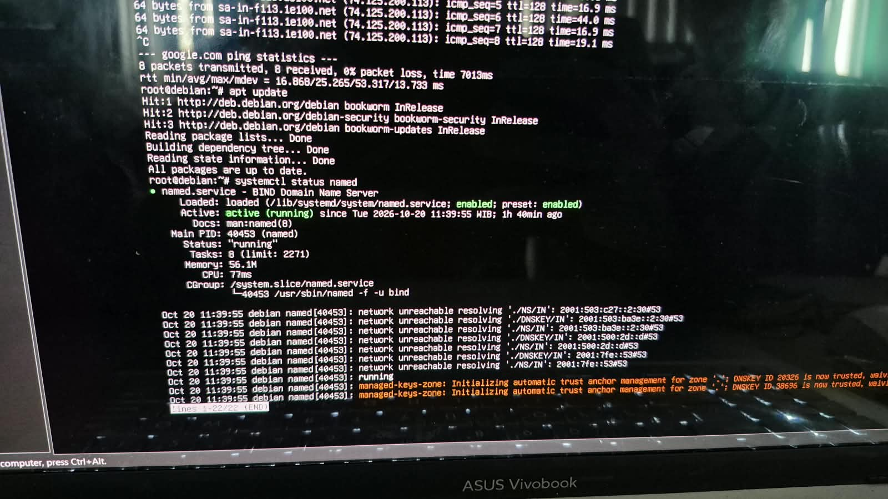

PERJALANAN BELAJAR
Education
SDN Cirimekar 02
Sekolah Dasar
SMP IT Alishlah
Sekolah Menengah Pertama
SMK Plus Pelita Nusantara
Sekolah Menengah Kejuruan
PORTFOLIO PRIBADI 2025—26
WELCOME TO MY PORTFOLIO
Halo, saya Ilham Febrian, pelajar Teknik Komputer dan Jaringan yang senang mempelajari komputer, jaringan, dan teknologi.
01 — ABOUT ME
Pelajar TKJ yang antusias belajar jaringan, perangkat komputer, dan teknologi.
Saya Ilham Febrian, seorang pelajar Teknik Komputer dan Jaringan (TKJ).
Saya sedang menempuh pendidikan di SMK Plus Pelita Nusantara. Saya tertarik mengembangkan kemampuan di bidang IoT, software, hardware komputer, serta networking menggunakan Mikrotik dan Cisco. Melalui pembelajaran di sekolah dan pengalaman PKL di PT Jala Lintas Media, saya terus mengasah keterampilan teknis, ketelitian, dan kemampuan bekerja sama.
PERJALANAN BELAJAR
Sekolah Dasar
Sekolah Menengah Pertama
Sekolah Menengah Kejuruan
PENGALAMAN
PT Jala Lintas Media · Warehouse
Quality Control & rekondisi adaptor dan ONT
DOKUMENTASI & PENCAPAIAN
Jelajahi dokumentasi PKL, sertifikat, dan momen belajar yang membentuk perjalanan saya.
02 — SELECTED WORK
Pilihan karya, pencapaian, dan momen yang saya abadikan.
PENGALAMAN LAPANGAN
Saya menjalani Praktik Kerja Lapangan di PT Jala Lintas Media, divisi Warehouse. Kegiatan saya mencakup Quality Control (QC) serta rekondisi adaptor dan ONT. Dari proses pemeriksaan, penanganan perangkat, hingga persiapan unit untuk digunakan kembali, saya belajar menjaga ketelitian dan kualitas kerja di lingkungan operasional.

.jpeg)


 Lihat sertifikat
Lihat sertifikatAWS · DTA
DEX · AWS · Nasional
 Lihat sertifikat
Lihat sertifikatDTA · NASIONAL
Digital Talent Academy
 Lihat sertifikat
Lihat sertifikatHUAWEI · HCIA
Course Certificate
.png) Lihat sertifikat
Lihat sertifikatHUAWEI · HCIA
Course Certificate · Bahasa Indonesia
 Lihat sertifikat
Lihat sertifikatHUAWEI · HCIA
Course Certificate
 Lihat sertifikat
Lihat sertifikatIDN · NETWORKING
Pelatihan jaringan komputer
 Lihat sertifikat
Lihat sertifikatIDN · SYSTEM
Pelatihan sistem operasi Linux
 Lihat sertifikat
Lihat sertifikatIDN · SECURITY
Dasar keamanan siber
 Lihat sertifikat
Lihat sertifikatIDN · NETWORKING
Pelatihan konfigurasi Mikrotik
 Lihat sertifikat
Lihat sertifikatIDN · CERTIFICATE
Sertifikat pelatihan IDN

